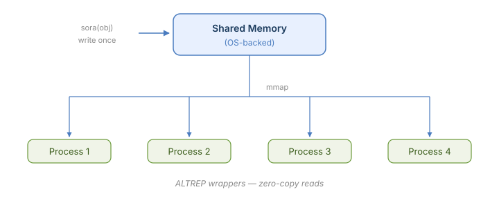

Shared Objects for R Applications
→ sora() writes an R object into shared memory and returns a shared version
→ ALTREP serialization hooks — shared objects serialize compactly
→ ALTREP-backed lazy access — columns materialize on first touch, not before
→ OS-level shared memory (POSIX / Win32), no external dependencies
→ Automatic cleanup — shared memory is freed by R’s garbage collector
Installation
install.packages("sora")Quick Start
sora() writes an R object into shared memory and returns a shared version backed by zero-copy ALTREP. Shared objects serialize compactly via ALTREP serialization hooks, working transparently with mirai and any R serialization path. Shared memory is automatically freed when the object is garbage collected.
Sharing by Name
shared_name() extracts the SHM name from a shared object. map_shared() opens a shared region by name — useful for accessing the same data from another process without serialization:
x <- sora(1:1e6)
# Extract the SHM name
nm <- shared_name(x)
nm
#> [1] "/sora_55fb_1"
# Another process can map the same region by name
y <- map_shared(nm)
identical(x[], y[])
#> [1] TRUEUse with mirai
Shared objects can be sent to local daemons — the ALTREP serialization hooks ensure only the SHM name crosses the wire, and the worker maps the same physical memory.
library(lobstr)
library(mirai)
daemons(1)
x <- sora(rnorm(1e6))
# Worker maps the same shared memory — 0 bytes copied
m <- mirai(list(mean = mean(x), size = lobstr::obj_size(x)), x = x)
m[]
#> $mean
#> [1] 0.0002925582
#>
#> $size
#> 792 B
daemons(0)Elements of a shared list also serialize compactly — each element travels as a reference to its position in the parent shared region, not as the full data:
daemons(4)
# Share a list — all 4 vectors in a single shared region
x <- sora(list(a = rnorm(1e6), b = rnorm(1e6), c = rnorm(1e6), d = rnorm(1e6)))
# Each element is sent as (parent_name, index) — zero-copy on the worker
mirai_map(x, \(v) list(mean = mean(v), size = lobstr::obj_size(v)))[.flat]
#> $a.mean
#> [1] 0.0002946361
#>
#> $a.size
#> 728 B
#>
#> $b.mean
#> [1] 0.0001566972
#>
#> $b.size
#> 728 B
#>
#> $c.mean
#> [1] 0.0006686742
#>
#> $c.size
#> 728 B
#>
#> $d.mean
#> [1] 0.0006331858
#>
#> $d.size
#> 728 B
daemons(0)Why sora
Parallel computing multiplies memory. When 8 workers each need the same 210 MB dataset, that is 1.7 GB of serialization, transfer, and deserialization — plus 8 separate copies consuming RAM.
sora eliminates all of it. sora() writes data into shared memory once. Each worker maps the same physical pages, receiving a reference of ~300 bytes instead of the full dataset — a 700,000x reduction:
n <- 5000000L
set.seed(42)
df <- data.frame(
x1 = rnorm(n), x2 = rnorm(n), x3 = rnorm(n),
x4 = runif(n), x5 = runif(n),
group = sample.int(100L, n, replace = TRUE)
)
shared_df <- sora(df)
# Per-task payload: ~210 MB vs ~300 bytes
length(serialize(df, NULL))
#> [1] 220000263
length(serialize(shared_df, NULL))
#> [1] 304Memory savings this large translate directly into performance. Less serialization, less transfer, less allocation — each worker starts computing sooner and the system spends less time moving data:
boot_means <- function(seed, data) {
set.seed(seed)
idx <- sample.int(nrow(data), replace = TRUE)
colMeans(data[idx, ])
}
seeds <- seq_len(8L)
daemons(8)
# Without sora — each daemon deserializes a full copy
system.time(mirai_map(seeds, boot_means, data = df)[])
#> user system elapsed
#> 2.400 44.729 6.689
# With sora — each daemon maps the same shared memory
system.time(mirai_map(seeds, boot_means, data = shared_df)[])
#> user system elapsed
#> 1.519 30.641 4.411
daemons(0)How It Works
All atomic vectors — including character vectors and those with attributes (factors, Dates, named vectors, etc.) — and data frame columns are written directly into shared memory. Pairlists are coerced to lists and handled the same way. sora() returns ALTREP wrappers that point into the shared pages — no deserialization, no per-process memory allocation. A data frame with 10 columns lives in a single shared region; a task that touches 3 columns pays for 3. Character strings are accessed lazily per element.
All other R objects (environments, closures, language objects) are returned unchanged by sora() — no shared memory region is created.

Automatic Lifetime Management
Shared memory is managed by R’s garbage collector. The SHM region stays alive as long as the shared object (or any element extracted from it) is referenced in R. When no references remain, the garbage collector frees the shared memory automatically.
Important: Always assign the result of sora() to a variable. The shared memory is kept alive by the R object reference — if the result is used as a temporary (not assigned), the garbage collector may free the shared memory before a consumer process has mapped it.
Copy-on-Write
Shared data is mapped read-only. Mutations are always local — R’s copy-on-write mechanism ensures other processes continue reading the original shared data:
- Structural changes to a list or data frame (adding, removing, or reordering elements) produce a regular R list. The shared region is unaffected.
-
Modifying values within a shared vector (e.g.,
X[1] <- 0) materializes just that vector into a private copy. Other vectors in the same shared region stay zero-copy.
–
Please note that the sora project is released with a Contributor Code of Conduct. By contributing to this project, you agree to abide by its terms.